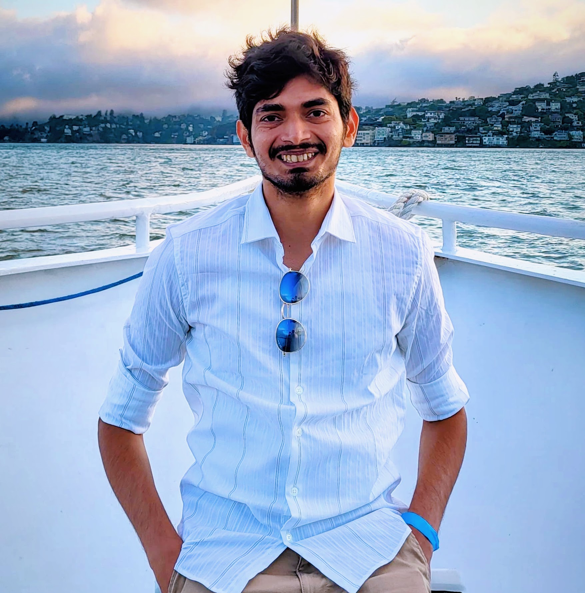

I am a PhD student in Computer Science at Stanford, advised by Prof. Kayvon Fatahalian. My work sits at the intersection of reinforcement learning, generative models, and computer graphics. I am most interested in world models: specifically, how do we learn representations that let an agent simulate, plan, and act quickly inside rich 3D environments? Right now I am pursuing this question in the context of fast solutions to 3D games.
Before Stanford, I was a Research Engineer at Avataar working on image-to-3D reconstruction, and a Pre-Doctoral Researcher at Google Research India, where I worked on super-resolved segmentation of satellite imagery with Dr. Varun Gulshan and Alex Wilson.
I did my M.Tech. (Research) at the Indian Institute of Science, in the Video Analytics Lab, advised by Prof. R. Venkatesh Babu and Dr. Varun Jampani. My thesis was on self-supervised representations for landmark estimation and generative image synthesis.

Recent News
- [Jan 26]Teaching Assistant for CS248A — Computer Graphics.
- [Sep 24]Started PhD in CS at Stanford University.
- [Aug 24]Our work AttributeDiffusion, which generates diverse-attributed images, accepted at WACV 2025!
- [Jul 24]Our work PreciseControl, which combines the best of StyleGAN and Text-to-Image Diffusion Models for precise attribute control, accepted at ECCV 2024!
- [Nov 23]Serving as a reviewer in CVPR 2024.
- [Oct 23]Started as a Research Engineer at Avataar!
- [Feb 23]Our work NoisyTwins, on long-tail and few-shot image generation for StyleGANs, accepted at CVPR 2023!